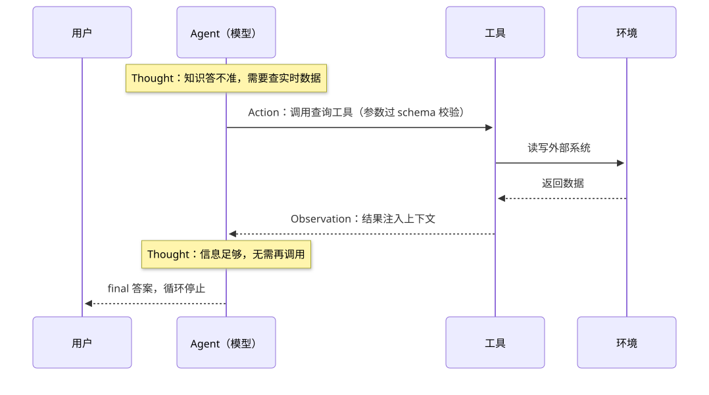

第5章 工具使用 Tool Use
让模型通过结构化协议调用外部函数获取信息或执行动作，用注册表、schema 校验、观察回注与停止条件把文本生成器变成可靠的执行器。
一句话定义：工具使用让模型在需要时调用外部函数与服务，通过结构化 schema 声明能力、校验参数、执行并回注观察，在循环中迭代直至任务完成或触发停止条件。 解决什么问题：模型知识有截止日期、算不准、不能执行真实动作 ｜ 适用场景：需要实时信息、精确计算、私有数据或外部动作的任何任务 ｜ 核心机制：工具注册表 + schema 校验 + 观察（Observation）注入 + agent 循环 ｜ 代价：延迟叠加、工具生态维护成本、幻觉调用与安全风险。
5.1 模式概述
5.1.1 问题背景：为什么需要这个模式
语言模型有三个结构性缺陷，靠增大参数量解决不了。第一，知识冻结：训练数据有截止日期，问它今天的汇率、某个库的最新版本，它只能编。第二，算不准：模型做的是 token 概率预测，不是算术运算，两位数乘法尚可，四位数乘法开始出错，对账、汇总这类任务不可接受。第三，无手无脚：模型不能查你的数据库、不能创建工单、不能发送邮件——而恰恰是这些动作构成了绝大多数业务场景的"最后一公里"。这三个缺陷指向同一个解法：让模型把"需要外部能力"的部分委托出去。模型擅长的是理解意图、选择手段、解读结果；计算器擅长算术，搜索引擎擅长实时信息，API 擅长执行动作。工具使用模式就是把这层委托协议化的工程机制：模型输出结构化的调用请求，框架校验后执行，把结果作为观察注入上下文，模型再决定下一步——直到任务完成。
5.1.2 核心机制：它如何工作
完整的工具使用系统有五个部件。工具注册表：每个工具登记名称、描述、参数 schema 和执行处理器（handler），这个注册表就是模型的"能力清单"。能力呈现：把注册表渲染成模型能读懂的提示文本（或 API 的 tools 参数），描述质量直接决定选择质量。调用生成：模型根据任务与历史，选择工具并生成参数，输出为结构化 JSON 或 API 原生的 function call。校验执行：框架先校验工具名是否在注册表内、参数是否满足 schema，通过后调用处理器执行，任何一步失败都把错误信息本身作为观察返回给模型。观察注入与循环：执行结果（或错误）追加进上下文，模型看到后决定继续调用、还是给出最终答案。循环受停止条件约束：模型声明完成、达到最大步数、或触发死循环检测。这五件套合起来，就是今天所有 agent 框架里那个"agent 循环"的最小原型。


5.1.3 与相邻模式的关系与组合
ReAct 与工具使用的关系是决策骨架与执行器官的关系：ReAct 定义了"思考—行动—观察"的循环结构，工具是"行动"的具体内容，两者在工程上几乎总是合并出现。与规划模式的关系是整体与局部：工具调用是计划的最小执行单元，长程任务由规划模式把目标分解成一串工具调用（第 6 章）。与反思模式的关系是反馈来源：工具执行结果是最可靠的"外部反馈"，代码跑不通的报错比模型自评的批评有价值得多。与检索增强生成（RAG）的关系是包含：检索本质上是"只读工具"里最常用的一个，工具使用是 RAG 的推广。与记忆模式的关系是状态管理：工具调用的历史、结果摘要如何保存与复用，是记忆模式要回答的问题。
5.2 源起：它从哪里来
工具使用的现代形态由 ReAct 奠定。2022 年 10 月，Princeton 与 Google Brain 把模型的推理轨迹（Thought）与对环境的行动（Action）交织起来，每步行动后把环境观察（Observation）拼回上下文——这个循环就是今天所有 agent 框架执行内核的直接原型。三个月后 Meta AI 的 Toolformer 换了条路：不改推理框架而改训练，用自监督方法从普通语料中挖掘"哪里插入 API 调用能帮助预测后续文本"，让模型自己学会在合适的位置发起调用。真正把工具使用推入 every API 的是 2023 年 6 月 OpenAI Function Calling 正式可用：工具声明变成结构化 JSON schema，调用变成 API 原生协议，开发者第一次不用自己解析模型文本就能拿到合法调用。生态层的下一跃是 2024 年 11 月 Anthropic 发布 Model Context Protocol（MCP）开放标准，把"每个工具对每个应用点对点集成"变成"工具服务器对协议互联"。
| 时间 | 事件 | 提出者/机构 | 出处 |
|---|---|---|---|
| 2022年10月 | ReAct：Thought→Action→Observation 循环，现代 agent 循环的直接原型 | Yao et al.（Princeton/Google Brain） | arXiv:2210.03629（ICLR 2023） |
| 2023年2月 | Toolformer：自监督方式让模型学会在何处插入 API 调用 | Schick et al.（Meta AI） | arXiv:2302.04761 |
| 2023年5月 | Gorilla：检索 API 文档减幻觉调用；Tool Learning 综述系统化版图 | Patil et al.（UC Berkeley/Microsoft）；Qin et al. | arXiv:2305.15334；arXiv:2305.16553 |
| 2023年6月 | OpenAI Function Calling 正式可用（GA）：调用协议化为结构化 schema | OpenAI | 官方发布说明 |
| 2024年11月 | MCP 开放标准发布：工具生态从点对点集成走向协议互联 | Anthropic | 官方公告 |
5.3 发挥的作用：为什么重要
工具使用把模型从"文本生成器"升级为"可验证的执行器"，这个转变带来四个层面的价值。能力层面，它补上了知识时效、精确计算与真实动作三块短板，模型第一次能触达训练数据之外的世界。可靠性层面，工具调用是结构化协议，可校验、可审计、可重放——一次调用要么参数合法要么报错，要么执行成功要么有异常，这比自由文本的"看起来对"可控得多；计算交给解释器之后，正确率从"看模型心情"变成"确定性执行"。架构层面，工具把系统切成模型与工具两个可独立演化的部分：换模型不必改工具，改工具不必重训模型，工具注册表天然形成能力边界与权限边界。成本层面，工具有时候是省钱的：让模型生成代码调用本地函数处理 10 万行数据，比让它把 10 万行数据读进上下文再逐段总结便宜几个数量级——上下文窗口是按 token 计费的稀缺资源，工具是在窗口之外干活的办法。
5.4 实际应用与案例
实时信息问答。 接入搜索工具回答时效性问题：模型判断问题需要实时信息，生成搜索词，从返回摘要中提炼答案。关键设计点是返回结果先做相关性与日期过滤再入上下文，避免旧闻污染。
数据分析与代码解释器。 上传数据集，让模型写 pandas 代码在解释器里执行，读输出续写下一步。关键设计点是执行环境沙箱化，错误堆栈原文回注，模型依据真实报错修正代码。
数据库自然语言查询。 Text-to-SQL 加执行：模型根据表结构生成 SQL，执行器先做只读校验与超时保护，再返回限量的结果行。关键设计点是提供表结构与样例行作为工具描述的一部分，schema 理解错误是 Text-to-SQL 失败的首要原因。
企业系统编排。 把 CRM、工单、审批系统封装成工具，让模型跨系统完成"查客户—查订单—开工单"的链式操作。关键设计点是写操作工具挂人工审批或二次确认，读操作直通，权限分级在注册表层实现。
浏览器操作智能体。 用点击、输入、截图等动作工具让模型操作网页，完成订票、填表等流程。关键设计点是每步动作前以页面可访问性树为观察，元素引用用稳定 ID 而非像素坐标，页面改版时才不至于全线崩溃。
设备与家居控制。 意图解析交给模型，设备协议交给工具：模型输出"开客厅灯"的结构化调用，工具层翻译成 IoT 协议。关键设计点是枚举校验（不存在的房间名、设备名直接拒绝并返回合法列表），控制类动作必须可撤销或有确认。
真实世界实例
OpenAI：Function Calling 与插件生态。 2023 年 6 月 13 日官方公告把工具调用协议化：开发者用 JSON Schema 描述函数，gpt-4-0613 与 gpt-3.5-turbo-0613 微调后自行判断何时调用并输出符合签名的 JSON 参数，开发者执行后把结果作为"function 角色"回注再续写——本章五件套的 API 原生形态；公告同时点名 ChatGPT Plugins 作为外部工具生态的先声。来源：OpenAI 官方公告
Anthropic：Claude Code 的内置工具集与权限闸。 Claude Code 内置 Bash、Read/Write/Edit、Glob/Grep、WebFetch/WebSearch 等工具，官方文档以 permissions 规则治理每一次调用：每个权限条目"指名一个工具及其允许的动作"，allow/ask/deny 三级规则决定哪些调用免审、哪些必须人审——把"工具按读写与风险分级、写操作挂确认"做成了产品默认。来源：Claude Code 官方文档
Manus：工具空间"屏蔽而非移除"。 官方工程博客披露，工具一多模型就会选错、走低效路径，而中途动态增删工具定义既会打断 KV-cache、又易诱发 schema 违规与幻觉调用；Manus 的解法是用上下文感知的状态机在解码时屏蔽（mask）工具的 token logits，并给工具起统一前缀的名字（browser_、shell_）以便按组约束——工具注册表不变、可用空间随状态收放。来源：Manus 官方博客
5.5 深度讲解
5.5.1 工具选择机制：schema 描述质量决定选择质量
模型选择工具的依据只有一个：你在描述里写了什么。工具多的时候模型选错、选漏、该用不用，绝大多数时候不是模型的问题，而是描述的问题。一份合格的工具描述要回答五个问题：这个工具做什么（一句话，动词开头）；什么时候该用它（典型触发场景）；什么时候不该用（易混淆的近邻工具，"不要用本工具做 X，请改用 Y"这句话对消歧的价值极高）；每个参数的语义与格式（含示例，尤其是日期格式、ID 格式这种模型最爱自由发挥的地方）；返回值长什么样（模型需要预判观察的形状才能写后续步骤）。工程上有一条容易被忽视的纪律：描述是写给模型看的，不是写给开发者看的 API 文档——内部实现术语、缩写、代码级的命名习惯都应该翻译成模型语言。五问落成可操作的描述写法四条，逐条自查后再上线：①一句话定义动词开头，内部术语与缩写翻译成模型语言；②"何时用"与"何时不用"成对写，点名易混淆的近邻工具；③每个参数给格式示例（日期、ID 是重灾区），能用 enum 不用自由文本；④写清返回值形状与失败时的返回样式，让模型能预判观察。改描述视同改接口——描述变更必须回归测试工具选择准确率。
工具规模上去之后会撞上第二堵墙：几十上百个工具的清单全量塞进上下文，既贵又降低选择准确率。解法是分层检索——先用语义检索按任务召回候选工具子集，再让模型在子集里选择，这正是 Gorilla 用检索 API 文档减幻觉的思路在工程上的直接推广；MCP 生态里"按需检索工具定义"（先列服务器名、再查具体工具 schema）也是同一原理。经验阈值大致是：十个以内的工具全量呈现即可；上百个必须检索式呈现。
把演化线收拢回这里看会更清楚：从"教模型在文本里嵌调用"（Toolformer）到"给模型一份声明式能力清单"（Function Calling）再到"给整个生态一个互联协议"（MCP），模型侧的进步解决的是"会不会用"，协议侧的进步解决的是"用得可不可靠、接得便不便宜"——工程史又一次证明，协议比技巧更耐用。Toolformer 判定"哪里该调用"的定量口径值得一记：对每个候选调用，比较"插入执行结果"与"不插入（或只插入调用、不给结果）"两种情形下，模型对后续真实文本的加权交叉熵损失，只有损失下降不低于阈值才保留该调用——默认阈值 τf=1.0，计算器与翻译两类工具因合格样本稀疏放宽到 0.5，候选位置的采样概率阈值 τs=0.05（arXiv:2302.04761）。这个"按信息增益筛调用"的思想没有过时：今天"按需检索工具定义""按收益决定是否调用"都是它的工程后裔。
5.5.2 参数生成与校验
参数是幻觉调用的高发区。模型会编造不存在的枚举值、把日期写成它想象中的格式、给可空的字段硬塞一个值。防线有三层。第一层是 schema 约束本身：能用 enum 就不要用自由字符串，能用 number 就不要用 string，required 列表写清楚——模型对结构化约束的遵循远好于对散文式描述的遵循。第二层是执行前校验：框架在调用 handler 前逐项检查类型、必填、枚举、范围，校验失败的错误信息必须可读且可执行——"参数 date 需要格式 YYYY-MM-DD，收到了 '明天'"，模型看到这样的观察，下一轮就能自我修正。第三层是把"猜参数"变成"问"或"查"：缺失关键参数时，提示协议里应允许模型发起澄清（问用户）或先调用一个查询类工具补齐参数，而不是默许它编一个。校验器不必引第三方库也能写——类型、required、enum 三个检查覆盖了九成问题，第 5.6.1 节的实现即是示范。
5.5.3 结果观察注入：上下文经济学
工具结果回注是 agent 循环里最容易被低估的成本项。三个实践原则。截断与摘要：大结果（长网页、万行查询）在注入前裁剪，只保留与当前子任务相关的片段或统计摘要；更激进的做法是给模型一个代码执行环境，让它在环境里过滤数据、只把结论送回上下文——Anthropic 在 2025 年的工程博客里把这称为用 MCP 做代码执行，报告了两个数量级的 token 节省。错误也是观察：工具报错必须原文（或清洗后）回注，删掉报错等于烧掉模型修正的唯一依据；报错同时要做人读得懂的包装，"错误码 -3"不如"搜索服务超时，可稍后重试或换个关键词"。观察的时效：过期的观察要标记或裁剪，长程任务里第三步抓的网页内容到第十步可能已经失效，模型拿着旧观察做决策比没有观察更危险。
5.5.4 循环与停止：agent 循环的骨架决策
循环控制是最能区分玩具与生产的部分。终止条件至少要设三道：模型主动终止（协议里定义 final 动作）；最大步数（经验值 10~25 步，超过基本意味着任务理解有误或陷入循环）；成本预算（token 或调用次数上限）。死循环检测是第四道：同一工具以相同参数连续出现两次以上，基本可以断定模型没有从观察中学到东西——此时应注入一次显式提醒（"你已经用相同参数调用过该工具，请改变策略或终止"），再犯则强制终止。步数与预算耗尽时的退出姿势也有讲究：如实报告"在执行第 N 步时达到步数上限，已完成的进展是……"，把部分成果和状态交还调用方，好过一个假装完成了的敷衍答案。
5.5.5 并行工具调用
任务里常有互不依赖的工具调用，串行执行白白叠加延迟。并行化有三个层面。模型层：现代 API 普遍支持一次响应里返回多个工具调用，模型自己判断独立性后批量发出；提示里也可以明确要求"若无依赖请一次给出所有调用"。框架层：框架识别调用间依赖（后一个调用的参数引用前一个的结果即有依赖），无依赖的并发执行、按序回注观察，保证上下文顺序稳定。语义层：写操作慎并行——两个写操作即使无数据依赖，也可能有业务顺序（先创建账户再设置权限），并行白名单应默认只含只读工具。观察注入的顺序要跟调用顺序对齐，乱序回注会让模型把结果张冠李戴。
5.5.6 幻觉调用的防线
模型会调用不存在的工具、给不存在的参数赋值、编造参数值——统称幻觉调用，Gorilla 论文的核心动机正在于此。防线是一个组合拳：枚举限制，收到注册表之外的工具名时，不猜测、不模糊匹配，直接返回错误并附上合法工具名列表，让模型自我纠正；schema 校验，类型、必填、枚举三查前置到执行之前，把幻觉拦截在产生副作用之前；白名单与权限分级，工具注册表按读写与风险分级，写操作默认需确认，高风险工具（转账、删除、外发）只对通过审批的会话开放；参数值溯源，凡涉及 ID、名称、账号的参数，要求模型只能引用此前观察中出现过的值——"参数值必须来自工具返回结果"这一条约束，能拦掉一大类凭空编造。防线的哲学是把模型当不可信用户对待：它输出的每一个调用都要过校验闸门，信任来自验证而非假设。
反直觉的是，最强的模型恰恰可能是幻觉调用的重灾区。Gorilla 在 APIBench 上实测的零样本幻觉调用率（调用了数据库中不存在的 API）：GPT-4 在 TorchHub / HuggingFace / TensorFlow Hub 三个子集上分别为 36.55%、37.16%、78.65%，而微调过的 Gorilla 只有 6.98%、10.95%、5.40%；给 GPT-4 配上 BM25 检索器能压到 11.29%、15.93%、37.08%，仍全面高于 Gorilla 配同款检索器的 4.30%、6.42%、2.77%（arXiv:2305.15334 Table 1）。直觉是"越强的模型编得越少"，事实是能力越强的模型越倾向于自信地调用一个不存在的 API——所以治理幻觉不能指望模型自觉，要靠协议：枚举、校验、值溯源三道闸对 GPT-4 级模型一样不能省。边界条件也在此显形：幻觉率与工具库的"模型熟悉度"强相关，TensorFlow Hub（训练语料里最少见）上 GPT-4 幻觉率近八成，而常见库上会好得多——你的工具越冷门，越不能裸奔。
5.5.7 怎么用：运用判断
适用信号：①任务触到模型三大短板——需要训练截止之后的信息、精确计算、或对真实系统的动作；②输出的正确性依赖外部状态（数据库、订单、文档），只有查过才算数；③需要审计轨迹：谁在何时改了什么，工具调用日志天然就是审计记录。
与最近替代方案的对比：
| 方案 | 与工具使用的关键差异 |
|---|---|
| RAG（纯检索增强） | 工具使用的子集：只有"检索"这一个只读工具，无计算与动作委托能力 |
| 长上下文直塞 | 数据直接进窗口：免集成，但受窗口上限与 token 成本约束，大数据量不经济 |
| 微调注入（Toolformer 式） | 把"何时调用"学进参数：免提示工程，但改模型成本高、新工具需重训 |
落地三步：①从最高频的 2~3 个任务倒推最小工具集，按 5.5.1 的"描述写法四条"写描述与 schema（枚举优先、"何时不用"必写）；②先只读、后写操作：跑通注册表 + 校验 + 循环的最小闭环（本章 5.6 四个片段即是骨架），写操作一律挂确认闸；③建小型评测集（含易混淆工具对与边界参数），每次换模型或改描述后回归工具选择准确率。
5.6 工程落地：核心源码与讲解
5.6.1 框架无关实现（片段 + 讲解）
主程序按原文件顺序拆成四个片段：模型接入与工具声明、注册表（校验与执行，错误路径核心）、演示工具、agent 循环与停止条件。四片按序拼接即完整可运行程序，依赖与环境变量见片 1 文档串。
"""工具使用模式：注册表 + schema 校验 + agent 循环（四片按序拼接即完整可运行程序）。
依赖：pip install openai；环境变量 AGENT_LLM_BASE_URL / AGENT_LLM_API_KEY / AGENT_LLM_MODEL。
"""
import ast
import json
import operator as op
import os
from dataclasses import dataclass
from typing import Any, Callable
from openai import OpenAI
client = OpenAI(base_url=os.environ.get("AGENT_LLM_BASE_URL", "https://api.openai.com/v1"),
api_key=os.environ["AGENT_LLM_API_KEY"])
MODEL = os.environ.get("AGENT_LLM_MODEL", "gpt-4o-mini")
def llm(prompt: str, system: str = "", temperature: float = 0.3) -> str:
"""调用一次大模型，返回文本回复。"""
msgs = ([{"role": "system", "content": system}] if system else []) + [{"role": "user", "content": prompt}]
resp = client.chat.completions.create(model=MODEL, messages=msgs, temperature=temperature)
return resp.choices[0].message.content or ""
@dataclass
class Tool:
"""一个工具 = 名称 + 模型可读描述 + 参数 schema + 执行处理器。"""
name: str
description: str
parameters: dict[str, Any] # JSON Schema 子集：type/properties/required/enum
handler: Callable[[dict[str, Any]], str]
▸ 代码怎么读：Tool 这一个 dataclass 把"能力声明"与"执行器"绑在一起：name、description、parameters 三个字段给模型看（渲染进能力清单），handler 给框架用（真正干活）——这就是"模型管决策、代码管执行"分工的最小实现。parameters 只取 JSON Schema 的 type / properties / required / enum 四个键，够用且模型遵循度高。llm() 与前几章完全一致，温度由调用方决定：本章循环里取 0.1，因为工具调用要的是稳定而非创造性。
class ToolRegistry:
"""注册表：登记工具、渲染模型可读能力清单、执行前校验、执行（错误转观察）。"""
def __init__(self) -> None:
self._tools: dict[str, Tool] = {}
def register(self, tool: Tool) -> None:
self._tools[tool.name] = tool
def describe_for_model(self) -> str:
"""描述质量决定选择质量：渲染给模型的能力清单。"""
return "\n".join(f"- {t.name}: {t.description}\n 参数 schema: {json.dumps(t.parameters, ensure_ascii=False)}"
for t in self._tools.values())
def validate(self, name: str, args: dict[str, Any]) -> str | None:
"""执行前校验，返回 None 表示通过；错误说明必须可执行——模型据此自我修正。"""
tool = self._tools.get(name)
if tool is None:
return f"未知工具 {name}。合法工具：{list(self._tools)}。请从中选择或给出 final。"
missing = [k for k in tool.parameters.get("required", []) if k not in args]
if missing:
return f"缺少必填参数 {missing}。参数定义：{json.dumps(tool.parameters, ensure_ascii=False)}"
for key, val in args.items():
spec = tool.parameters.get("properties", {}).get(key)
if spec is None:
return f"参数 {key} 不在 schema 中。合法参数：{list(tool.parameters.get('properties', {}))}"
ok = {"string": isinstance(val, str),
"number": isinstance(val, (int, float)) and not isinstance(val, bool),
"integer": isinstance(val, int) and not isinstance(val, bool),
"boolean": isinstance(val, bool)}.get(spec.get("type"), True)
if not ok:
return f"参数 {key} 应为 {spec.get('type')}，实际为 {type(val).__name__}（值：{val!r}）"
if "enum" in spec and val not in spec["enum"]:
return f"参数 {key}={val!r} 不在合法枚举 {spec['enum']} 中"
return None
def call(self, name: str, args: dict[str, Any]) -> str:
"""校验拒绝与执行异常都转成可读错误文本——错误也是观察。"""
if err := self.validate(name, args):
return f"[调用被拒绝] {err}"
try:
return self._tools[name].handler(args)
except Exception as exc: # noqa: BLE001 —— 执行层兜底
return f"[工具执行异常] {type(exc).__name__}: {exc}"
▸ 代码怎么读：这一片是全章防御性设计的核心，validate 在执行前做四查：未知工具（附上合法清单，模型看了能自我纠正）、缺必填、参数不在 schema、类型与枚举不符——每条错误信息都写成"模型看了知道怎么改"的样子，因为它们马上会作为观察回注（5.5.2 三层防线的前两层都在这里）。类型检查的字典把 bool 与 int/float 显式区分，否则 True 会被当成数字 1 蒙混过关。call 把 handler 的异常也兜成可读文本，异常永远不击穿 agent 循环；错误说明里的合法工具、参数定义直接取自注册表——单一事实源，提示与实现不会脱节。工具不超过十个时全量呈现清单即可（5.5.1 的规模判据）。
_BIN_OPS = {ast.Add: op.add, ast.Sub: op.sub, ast.Mult: op.mul, ast.Div: op.truediv}
def safe_calc(expr: str) -> str:
def ev(n: ast.AST) -> float:
if isinstance(n, ast.Constant) and isinstance(n.value, (int, float)):
return float(n.value)
if isinstance(n, ast.BinOp) and type(n.op) in _BIN_OPS:
return _BIN_OPS[type(n.op)](ev(n.left), ev(n.right))
raise ValueError(f"表达式包含不允许的元素：{ast.dump(n)[:60]}")
return str(ev(ast.parse(expr, mode="eval").body)) # ast 白名单遍历，杜绝 eval 任意代码执行
def build_registry() -> ToolRegistry:
reg = ToolRegistry()
reg.register(Tool("calculator", "对四则运算表达式求值，只允许数字与 + - * / ( )。",
{"type": "object", "required": ["expression"],
"properties": {"expression": {"type": "string", "description": "如 (1240+360)/4"}}},
handler=lambda a: safe_calc(a["expression"])))
return reg
▸ 代码怎么读：calculator 的求值走 ast 白名单遍历而不是 eval——模型生成的表达式是不可信输入，白名单只放行数字与四则运算节点，其余一律拒绝，杜绝任意代码执行；生产上还应加表达式长度与 AST 深度上限。description 是写给模型看的："只允许数字与 + - * / ( )"一句话框死输入域，正对应 5.5.1 的描述写法。枚举约束、执行异常转观察等更多工具写法见 5.5.2 与 5.5.6 的防线说明。
SYSTEM_PROMPT = """你是能调用工具的助手。可用工具：
{tools}
每轮只输出一个 JSON 对象，二选一：
1) {{"thought": "简短理由", "tool": "工具名", "arguments": {{...}}}}
2) {{"thought": "简短理由", "final": "最终答案"}}
参数值只能来自任务文本或工具返回结果，禁止编造；工具报错后按错误信息修正再试。"""
def run_agent(task: str, registry: ToolRegistry, max_steps: int = 10) -> str:
"""agent 主循环。停止条件：final 声明 / 最大步数（死循环检测等更多闸门见 5.5.4）。"""
history: list[str] = [f"【任务】{task}"]
for step in range(1, max_steps + 1):
raw = llm("\n".join(history) + "\n\n请输出下一个 JSON。",
system=SYSTEM_PROMPT.format(tools=registry.describe_for_model()), temperature=0.1)
try:
decision = json.loads(raw.strip().strip(chr(96)).lstrip("json")) # 容错剥代码围栏
except json.JSONDecodeError:
history.append(f"【观察】输出解析失败：{raw[:200]}。请严格按 JSON 格式重发。")
continue # 错误路径：解析失败转观察
if "final" in decision:
return str(decision["final"])
name, args = str(decision.get("tool")), decision.get("arguments", {})
observation = registry.call(name, args)
history.append(f"【调用】{name}({json.dumps(args, ensure_ascii=False)})")
history.append(f"【观察】{observation[:800]}") # 观察截断：保护上下文预算
return f"已达最大步数 {max_steps}，任务未完成。已获信息：\n" + "\n".join(history[-6:])
if __name__ == "__main__":
answer = run_agent(task="用计算器算出 3280 + 1560.5 的结果。", registry=build_registry())
print("最终答案：", answer)
▸ 代码怎么读：agent 循环的骨架决策都在这一片。SYSTEM_PROMPT 约定模型每轮只输出一个 JSON（工具调用或 final 声明二选一），"参数值只能来自任务文本或工具返回结果"写进协议，就是 5.5.6 说的参数值溯源。循环内两个错误路径：输出解析失败转观察让模型重发（围栏用 chr(96) 构造防文档截断）；步数耗尽时返回已获信息与状态、而非假装完成。观察截断到 800 字符是 5.5.3 上下文经济学的最小实现——大结果先裁剪再入历史。接自己的工具只需改 build_registry；相同调用重复检测、写操作确认闸等生产闸门按 5.5.4 与生产化清单补齐。
5.6.2 框架差异速览（Google ADK）
ADK 的核心约定是"带类型标注与 docstring 的普通 Python 函数即是工具"，同一套能力的对应关系（按 google-adk 1.x 公开 API 风格；ADK 迭代较快，运行前以所装版本官方 quickstart 核对导入路径）：
| Google ADK 约定 | 对应本章部件 | 一句话差异 |
|---|---|---|
| 带类型标注与 docstring 的普通函数 | 工具注册表 + 参数 schema | 框架读函数签名自动生成 schema，免手写 |
| Agent(tools=[...], instruction=...) | 能力呈现 + 系统提示 | 能力清单渲染由框架完成 |
| Runner.run(...) 事件流 | agent 循环 + 观察注入 | 循环由框架接管，每步事件可观测 |
| 返回含 error 字段的字典 | 错误转观察 | 约定用返回值表达错误，模型直接可读 |
5.6.3 生产化改造清单
- 错误处理：工具异常一律捕获转结构化观察，附错误类型与下一步建议；禁止让异常击穿 agent 循环。
- 超时：每个工具设独立超时并注明默认值；慢工具（搜索、网页抓取）配降级路径或缓存兜底。
- 并发：无依赖的只读调用并发执行；写操作串行并按业务顺序排队。
- 缓存：幂等工具（查询、汇率）按参数哈希做短 TTL 缓存，重复问题不重复付工具与 token 成本。
- 可观测：记录每步的 thought、调用、参数、观察、耗时与 token 数；工具失败率与循环步数分布是核心健康指标。
- 成本控制：工具清单按需注入（检索式呈现）；大结果先截断/摘要再回注；设任务级 token 与调用次数预算。
- 安全：工具按读写与风险分级，写操作挂确认或审批；执行环境沙箱化；参数值溯源（只能引用观察中出现过的值）。
- schema 治理：枚举优先于自由文本；描述含"何时不用"；schema 变更纳入版本管理并回归测试选择准确率。
- 死循环防护：相同调用的重复检测加提醒、再犯强制终止；步数耗尽时输出部分成果与状态而非假装完成。
- 评测：建工具选择与参数生成的评测集（含易混淆工具对、边界参数），每次换模型或改描述后回归。
5.7 概览 / 核心要点 / 结论
5.7.1 本章小结
工具使用模式把语言模型的三个结构性缺陷——知识冻结、算不准、不能行动——转化为对外的委托调用：注册表声明能力，schema 约束参数，校验前置拦截幻觉，观察回注驱动循环，四道停止条件保证体面退出。从 ReAct 的 Thought→Action→Observation 原型，到 Function Calling 的协议化，再到 MCP 的生态互联，这条演化线的方向始终是把"模型会调用"变成"系统可托付"。工程成败集中在三处：工具描述的质量决定选择的质量，校验闸门决定副作用的下限，循环治理决定成本与延迟的上限。
5.7.2 核心要点
- agent 循环的最小原型是 ReAct 的 Thought→Action→Observation；今天所有框架的执行内核都是它的变体。
- 工具描述写给模型看：是什么、何时用、何时不用、参数语义与格式、返回值形状，五问齐全才上线。
- 参数校验三层防线：schema 约束（enum 优先）、执行前校验（类型/必填/枚举）、参数值溯源（只引用观察中出现过的值）。
- 错误也是观察：未知工具、校验失败、执行异常都要转成可执行的错误信息回注，让模型自我修正。
- 观察注入要管上下文经济学：大结果截断摘要，过期观察标记裁剪，必要时让代码在沙箱里过滤、只回结论。
- 停止条件四道闸：final 声明、最大步数、成本预算、重复调用检测；退出时如实报告部分进展。
- 并行调用只对无依赖的只读工具开放；写操作保持业务顺序。
- 幻觉调用的防线是组合拳：枚举限制 + schema 校验 + 白名单分级 + 值溯源；工具规模上百时改用检索式呈现（Gorilla 思路），全量清单既贵又降准确率。
5.7.3 结论
工具使用是智能体从"会说"到"会做"的分水岭，但它的可靠性不来自模型，而来自工程。一个生产级的工具使用系统，本质上是一份把模型当不可信调用方的防御性设计：描述要经得起模型的误读，校验要拦得住模型的幻觉，循环要停得下来，错误要回得去。从 2023 年 Function Calling 把调用协议化、到 2024 年 MCP 把生态接线标准化，行业已经把"接入"这件事的门槛降到很低；真正拉开系统差距的，是注册表治理、观察注入的上下文经济学与循环停止条件这些不起眼的骨架决策——它们才是本章代码里值得逐行研读的部分。
5.8 延伸阅读与参考链接
论文
- ReAct: Synergizing Reasoning and Acting in Language Models（Yao et al., 2022）：arXiv:2210.03629
- Toolformer: Language Models Can Teach Themselves to Use Tools（Schick et al., 2023）：arXiv:2302.04761
- Gorilla: Large Language Model Connected with Massive APIs（Patil et al., 2023）：arXiv:2305.15334
- Tool Learning with Foundation Models（Qin et al., 2023，综述）：arXiv:2305.16553
官方文档与规范
- Model Context Protocol（MCP）官网与规范：https://modelcontextprotocol.io
- OpenAI Function Calling 指南：https://platform.openai.com/docs/guides/function-calling
- Google ADK 官方文档：https://google.github.io/adk-docs/
- Claude Code 设置与工具权限文档：https://code.claude.com/docs/en/settings
案例来源
- OpenAI《Function calling and other API updates》（2023-06-13）：https://openai.com/index/function-calling-and-other-api-updates/
- Anthropic《Introducing the Model Context Protocol》（2024-11-25）：https://www.anthropic.com/news/model-context-protocol
- Manus《Context Engineering for AI Agents: Lessons from Building Manus》（2025-07）：https://manus.im/blog/Context-Engineering-for-AI-Agents-Lessons-from-Building-Manus